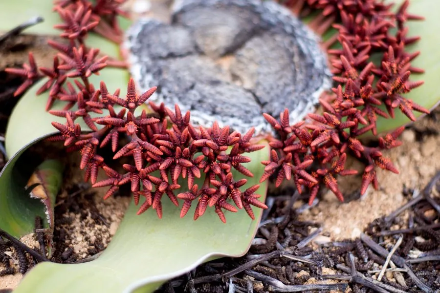

蕨类与裸子植物 · 植物界
百岁兰 Welwitschia mirabilis

百岁兰一生只有两片叶子，却能活上千年，是非洲纳米布沙漠特有的裸子植物“活化石”，耐旱力惊人。
- 分类
- 门裸子植物门纲买麻藤纲目买麻藤目科百岁兰科属百岁兰属
- 栖息环境
- 纳米布沙漠的砾石荒漠，年降水量不足 100 mm，靠地下水和海雾
- 地理分布
- 非洲纳米比亚与安哥拉西南部的纳米布沙漠
- 保护级别
- IUCN 暂无评估；纳米比亚与安哥拉立法保护，禁止采集
物种志
百岁兰是百岁兰科唯一的物种，形态奇特。它的茎短粗，大部分埋在沙中，露出地面的部分高不到 1 m，茎顶木质化，直径可达 1 m 以上。一生只长出两片带状叶，从茎顶两侧对生而出，叶长可达 2–4 m，先端因风沙磨损而撕裂成许多条带，状如章鱼触手。叶片基部有分生组织，可不断生长，叶脉平行；雌雄异株，球花生于茎顶叶腋处。
百岁兰只生长在非洲西南部纳米布沙漠，那里年降水量常不足 100 mm，它主要依靠深入地下 30 m 的直根吸收地下水，并借由叶片上的气孔在清晨吸收海雾凝结的水分。它的叶片寿命可达数百年至上千年，植株年龄常超过 500 年。百岁兰是买麻藤类中独特的孑遗植物，对研究裸子植物演化与沙漠适应有很高价值。由于分布区狭窄、繁殖率低，纳米比亚和安哥拉都立法保护，禁止野外采集。
形态与习性
- 叶片终生仅 2 片，长 2–4 m
- 茎短粗，直径可达 1 m
- 寿命常超过 500 年
- 根系直根可深入地下约 30 m
- 繁殖种子繁殖，雌雄异株
- 水分靠地下水与海雾凝结水
- 分布纳米布沙漠特有种
趣味知识
- 百岁兰一生只长两片叶，叶尖被风沙撕裂成条，看起来像章鱼触须。
- 它的根能扎到地下 30 m 深处寻找地下水，是沙漠生存的关键。
- 有记录的百岁兰个体年龄超过 1500 年，叶片却始终只有两片。